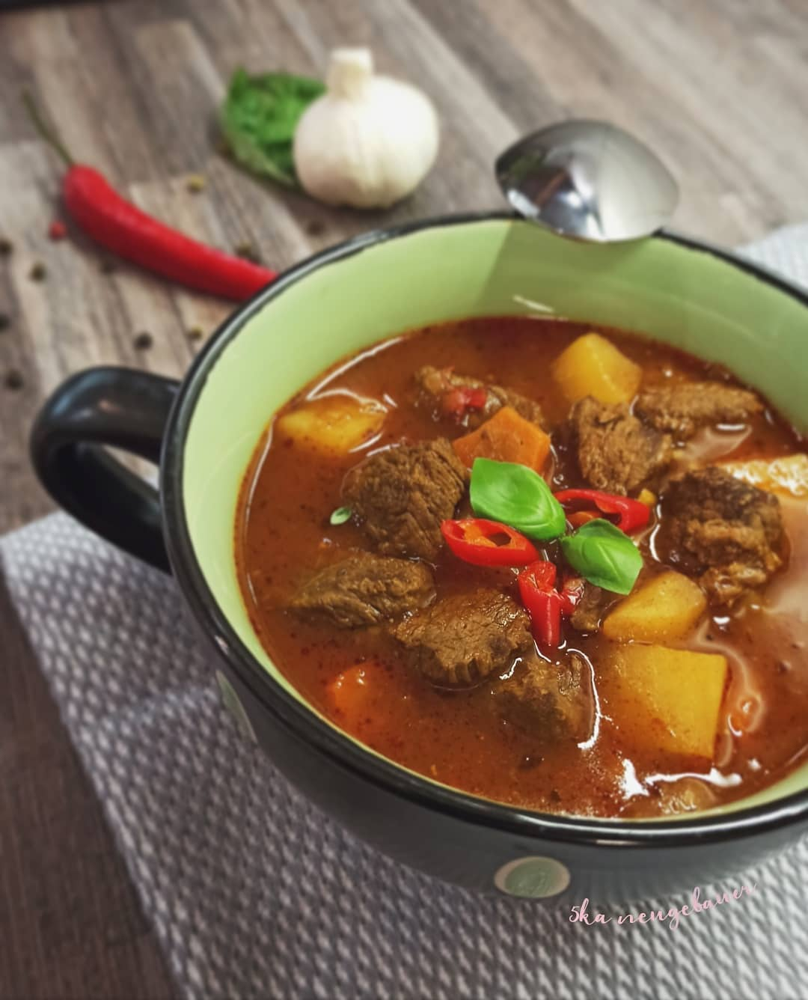

Hovädzí guláš podľa @5ka_neugebauer — Normy Jedál
#hovadzigulas #gulas #polievka #beefgoulash #soup #foodideas #hovadziemaso #gulasovapolevka #obed #mominthekitchen
... hovädzí guláš 😋🍀... cibuľu opražíme do zlatista pridáme mäso, keď sa zatiahne osolíme a okoreníme, pridáme červenú papriku. Podlejeme červeným vínom, necháme nech sa alkohol odparí dolejeme vodu. (Medzitým si nalejeme pohár vína 🍷) Potom pridáme zelenú papriku nakrájanú na menšie kúsky a paradajky, ktoré som zbavila šupky do toho dám cesnak a malý paradaj. pretlak. Vodu dolievam postupne, keď je mäsko skoro uvarené pridám mrkvu a zemiaky... dochutím majoránkou a čili papričkami 😉(na zahustenie môžte použiť nastrúhaný zemiak)